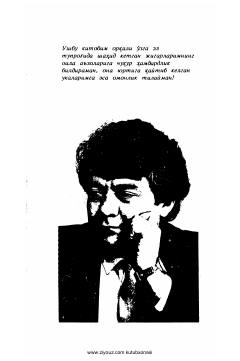

QYUrush qurbonlari va ularning yaqinlari taqdiriga bag'ishlangan ta'sirli asar.
Ushbu asar o'zga yurt tuprog'ida halok bo'lgan vatandoshlar xotirasiga bag'ishlangan. Kitob urushning ayanchli oqibatlari va inson taqdirlariga ta'siri haqida hikoya qiladi.